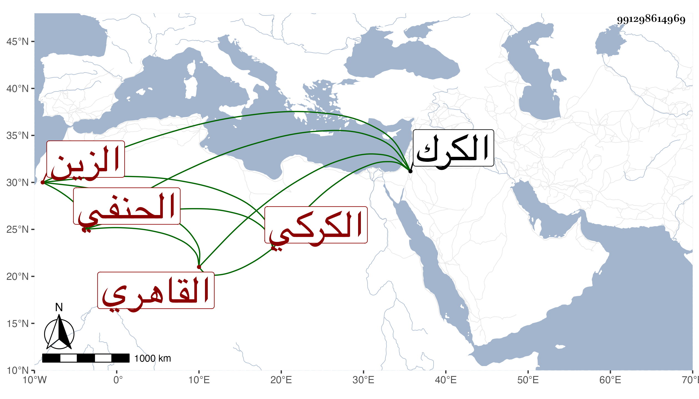

0902Sakhawi.DawLamic.ITO20230111-ara1.EIS1600.991298614969
Biography ID: 991298614969
330
عبد الرحمن بن محمد بن المجد اسماعيل الزين الكركي ثم القاهري الحنفي والد الإمام إبراهيم الماضي ويعرف بالكركي . قدم من الكرك وهو صبيح الوجه فخدم بعض الطلبة ورغبه الطالب في حفظ القرآن وتدرب به في الميقات ونحوه بل كتب المنسوب ثم اتصل بخدمة الأتابك يشبك المشد وأقرأ مماليكه وأم به وكذا أذن واختص به حتى زوجه جارية جركسية من خدمه فاستولدها ابنه المشار إليه وباشر الرياسة بالجامع الطولوني وغيره وتنزل في صوفية الشيخونية قديما وسمع فيها على الفوي والجمال عبد الله الحنبلي وغيرهما كشيخنا ومما سمعه على الأول التيسير للداني بقراءة الشمس محمد بن موسى بن عمران المقري في سنة سبع وعشرين بل سمع قبل ذلك في سنة اثنتي عشرة بها أيضا على الشرف بن الكويك مسند أبي حنيفة للحارثي بقراءة الكلوتاتي وحج وزار ، كل ذلك مع الخير والمواظبة على التلاوة والقيام والصفاء ورأيت وصفه في الاجايز من غير واحد بالشيخ الصالح المقرىء المتقن المجود الحافظ فكأنه قرأ القراءات وربما حضر في مجلس السلطان حين كان ابنه القارىء للبخاري به ويجلس فوق الأكابر ويلبس خلعة بسمور أجاز في الاستدعاءات . مات في يوم الخميس رابع عشر رمضان سنة ثمانين وصلى عليه من الغد في محفل كبير مع غيبة ولده وقد جاز الثمانين رحمه الله وإيانا .
